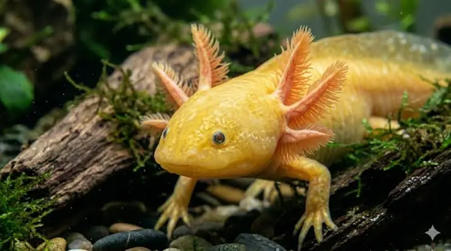

Axolotl Data
- Scientific Name: Ambystoma mexicanum
- Native Habitat: Lake Xochimilco
- Conservation Status: Critically Endangered
- Average Lifespan: 10 - 15 years
- Unique Ability: Full Limb Regeneration
Xochimilco Weather
- Temperature: 9°C
- Condition: Misty & Cool
- Wind: 6.5 km/h
- Wind Chill: